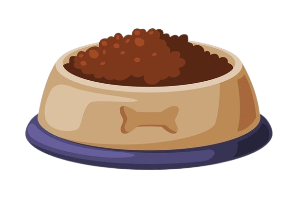
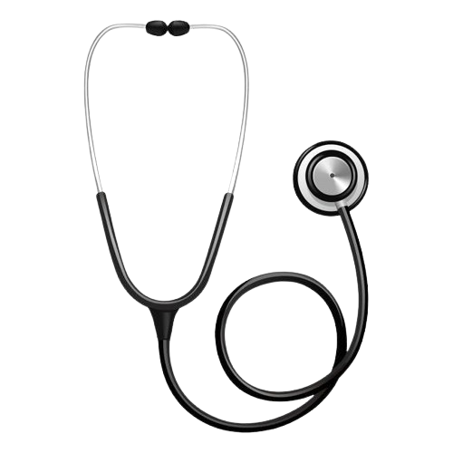
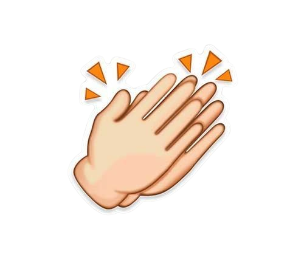

Donnez à votre chien une alimentation adaptée à son âge, sa taille et son activité. Privilégiez des croquettes de qualité ou une nourriture équilibrée. Assurez-vous qu’il ait toujours de l’eau propre et fraîche et évitez les aliments dangereux comme le chocolat, l’oignon ou le raisin.
Emmenez votre chien régulièrement chez le vétérinaire pour les vaccins et les contrôles de santé. Pensez aux traitements contre les parasites (puces, tiques, vers). Maintenez aussi une bonne hygiène : brossage du pelage, nettoyage des oreilles et activité physique régulière.


L’éducation positive consiste à récompenser les bons comportements plutôt que punir les mauvais. Utilisez des récompenses, des caresses ou des friandises pour encourager votre chien. Soyez patient, cohérent et régulier pour l’aider à apprendre et à bien se comporter.